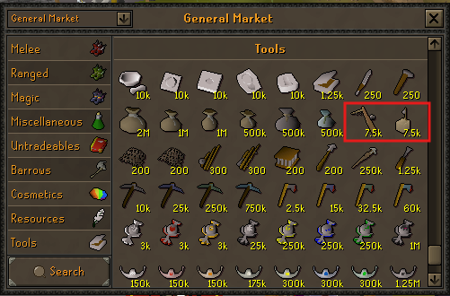
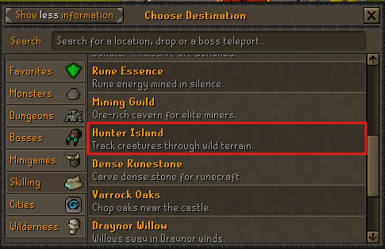
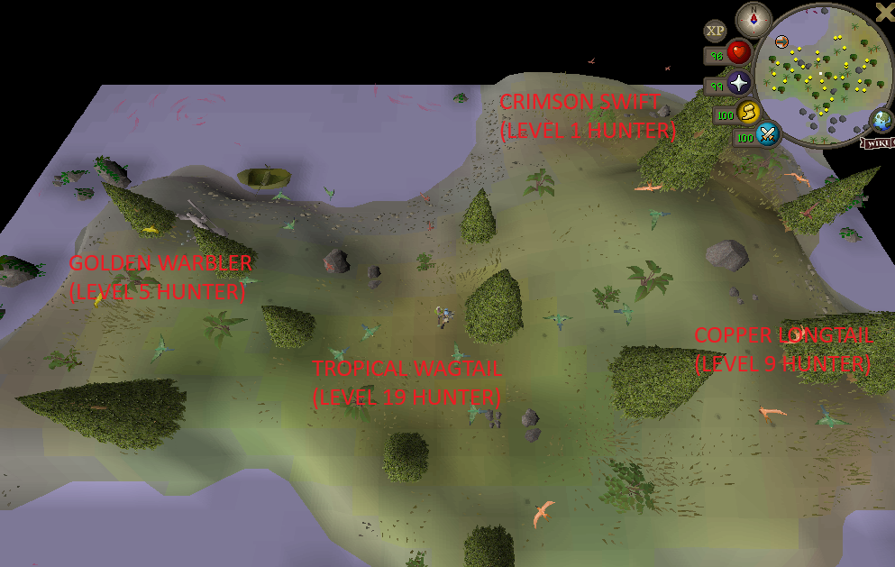
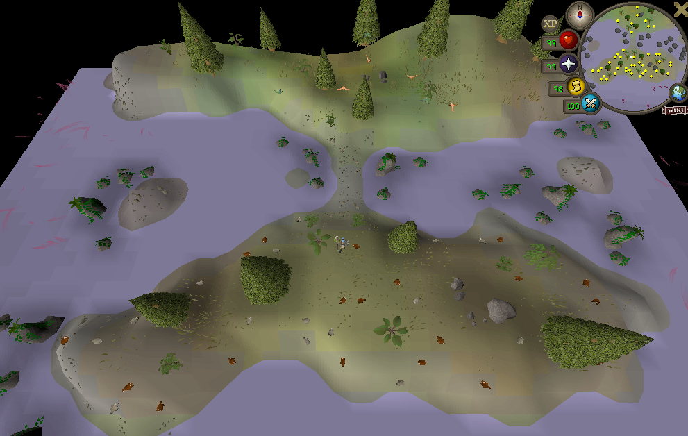
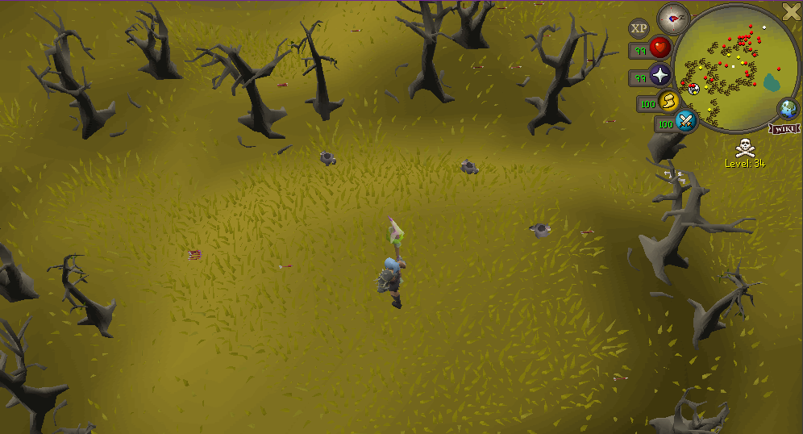

IMPACT HUNTER PROGRESSION
Impact RSPS Hunter Guide: 1–99 Levels and Locations
Train Hunter from your first bird snare to black chinchompas with clear level ranges, trap limits, Hunter Island maps and a safer alternative for players who want to avoid the Wilderness.
Hunter unlocks stronger creatures and more simultaneous traps as you level — but the level 73 Wilderness route adds real player risk.
QUICK ANSWER
What is the fastest documented 1–99 Hunter route in Impact RSPS?
Buy three bird snares and five box traps from Shanomi, then train birds on Hunter Island until level 53. Catch grey chinchompas from 53 and use red chinchompas from 63 as the recommended progression.
At level 73, choose the documented black-chinchompa route through ::chins or remain with red chinchompas on Hunter Island. The official sources publish no comparative XP rate, so black chinchompas are presented as the Wilderness option rather than a guaranteed faster method.
- Bird stageLevels 1–52 on Hunter Island
- Box-trap stageGrey at 53, red at 63
- Route decisionWilderness or Hunter Island from 73
- Trap unlocksLevels 20, 40, 60 and 80
PREPARE BEFORE TRAVEL
Where to buy bird snares and box traps
- 01
Reach Shanomi
Use
::shopas stated by the official Hunter guide, or speak to Shanomi at Home. The separate Commands page currently documents::shops, so use Shanomi if a command differs in game. - 02
Open the General Market
Choose the Tools area and locate the bird snare and box trap.
- 03
Buy three bird snares
This covers the maximum active-snare limit reached during the bird stage.
- 04
Buy five box traps
Keep all five available for the level 80 trap-limit unlock.
The supplied shop screenshot shows a 7.5K listing for both highlighted items, but confirm the current price and account-mode access before buying. The official Shops page notes that Ironman purchases can depend on prior item acquisition.

TELEPORT ROUTE
How to teleport to Hunter Island
- 1Use
::home. - 2Find the Spiritual Fairy Tree in the centre of Home.
- 3Open the destination interface.
- 4Select the Skilling category.
- 5Search for or select Hunter Island.
- 6Teleport and use the correct creature area below.

::home, choose Skilling and select Hunter Island.LEVEL 1 TO 99
Impact Hunter 1–99 progression at a glance
Recommended progression based on the official creature unlocks. Switching immediately is an editorial recommendation, not a compulsory game rule.
Crimson swift
Bird snare · North-east Hunter Island
Golden warbler
Bird snare · West Hunter Island
Copper longtail
Bird snare · East Hunter Island
Tropical wagtail
Bird snare · Centre Hunter Island
Tropical wagtail
Bird snares · Centre Hunter Island
Tropical wagtail
Bird snares · Centre Hunter Island
Grey chinchompa
Box traps · South Hunter Island
Grey chinchompa
Box traps · South Hunter Island
Red chinchompa
Box traps · South Hunter Island
Choose your route
Black chinchompas in the Wilderness or red chinchompas on Hunter Island
Continue your route
Black chinchompas in the Wilderness or red chinchompas on Hunter Island
LEVELS 1–53
Levels 1–53: bird snares on Hunter Island
- Travel to Hunter Island through the Spiritual Fairy Tree.
- Find the highest-level recommended bird currently unlocked.
- Place only the number of bird snares your level permits.
- Monitor, collect and reset every trap manually.
- Increase active snares at levels 20 and 40.
- Change to box traps at level 53.
- Crimson swift · 1
- North-east
- Golden warbler · 5
- West
- Copper longtail · 9
- East
- Tropical wagtail · 19
- Centre

LEVELS 53–73
Levels 53–73: grey and red chinchompas
Grey chinchompas
Run south after arriving on Hunter Island. Use three box traps at level 53, then four from level 60.
Red chinchompas
Remain in the southern chinchompa area and use four box traps. Switching at 63 is the recommended progression.
Non-Wilderness route
Continue red chinchompas when you want to avoid Wilderness player risk. Five traps unlock at level 80.

LEVELS 73–99
Levels 73–99: black chinchompas in the Wilderness
Black chinchompas
- Use
::chins. - Four box traps through level 79.
- Five box traps from level 80.
- Bring the officially recommended Amulet of Glory.
Red chinchompas
- Return to Hunter Island.
- Continue south to the chinchompa area.
- Use the same four-then-five trap limits.
- Avoid Wilderness player risk.

::chins destination is an unsafe single-combat Wilderness area. Confirm your current Wilderness level and escape route in game.PERSONAL ROUTE
Hunter Level Planner
Enter a whole Hunter level and select how you want to handle the level 73 Wilderness decision. The complete route above remains available when JavaScript is disabled.
ACTIVE PLACEMENTS
How many Hunter traps can you use?
| Hunter level | Maximum traps | Relevant stage |
|---|---|---|
| 1–19 | 1 | Birds |
| 20–39 | 2 | Birds |
| 40–59 | 3 | Birds, then chinchompas |
| 60–79 | 4 | Chinchompas |
| 80–99 | 5 | Chinchompas |
Bird snares are used before level 53 and box traps from level 53. Carrying extra traps does not increase the active placement limit, and every active trap should be monitored manually.
PLAN THE EXIT FIRST
Black chinchompa Wilderness safety
Keep risk low
Carry the required traps and only low-risk items you accept losing.
Bring a Glory
The official Hunter guide recommends an Amulet of Glory near the level-30 Wilderness line, but it does not guarantee an escape from every tile.
Check the level
Confirm the current Wilderness level and teleport conditions before relying on an exit.
Watch the area
Monitor the minimap and surroundings. Leaving early is better than protecting an uninterrupted session.
Bank valuable catches
Bank periodically instead of carrying more Wilderness risk than the route requires.
Know the route
Choose the escape direction before placing traps and recheck it after moving.
AVOID LOST TIME AND RISK
Common Impact Hunter mistakes
Wrong preparation
Forgetting enough traps, using the wrong trap type or exceeding the current active limit.
Wrong creature or area
Training a locked creature, searching the wrong side of Hunter Island or trusting one screenshot instead of checking the creature name.
Unsafe assumptions
Entering ::chins before 73, treating single-combat as safe, bringing valuables or forgetting the recommended Glory.
Unattended training
Leaving traps unattended or using bots, scripts, macros, AHK or other prohibited automation.
BEFORE EACH SESSION
Impact Hunter checklist
- Check the current Hunter level.
- Buy the correct trap type.
- Confirm the current active-trap limit.
- Use the Spiritual Fairy Tree for Hunter Island.
- Find the correct creature area.
- Place and monitor traps manually.
- Switch creatures at the recommended unlock level.
- At level 73, choose between Island training and Wilderness black chinchompas.
- Confirm the escape route before using
::chins. - Recheck the official guide when mechanics or locations appear different.
FAQ
Impact Hunter questions
Where do I buy bird snares in Impact?
Buy bird snares from Shanomi’s General Market at Home. The official Hunter guide recommends buying three before travelling to Hunter Island.
Where do I buy box traps?
Buy box traps from Shanomi’s General Market at Home. The official Hunter guide recommends five for the chinchompa stages.
How do I reach Hunter Island?
Use ::home, open the Spiritual Fairy Tree in the centre of Home, choose the Skilling category and select Hunter Island.
What should I catch from level 1 Hunter?
Catch Crimson swifts with a bird snare on the north-east side of Hunter Island. Golden warblers unlock at level 5.
When can I use two, three, four and five traps?
Two active traps unlock at level 20, three at level 40, four at level 60 and five at level 80.
What level unlocks grey chinchompas?
Grey chinchompas unlock at level 53 Hunter. Use box traps and run south from the Hunter Island teleport.
What level unlocks red chinchompas?
Red chinchompas unlock at level 63 Hunter and are found in the chinchompa area south of the Hunter Island teleport.
What level unlocks black chinchompas?
The official route begins black chinchompas at level 73 through ::chins in the Wilderness.
Do I have to train black chinchompas from 73–99?
No. You may continue red chinchompas on Hunter Island to level 99 when you want to avoid Wilderness player risk.
Is the ::chins location safe?
No. The official Commands page describes ::chins as an unsafe single-combat Wilderness destination. Single-combat does not make the area safe from player attacks.
What should I bring to black chinchompas?
Bring box traps up to your current active limit, only low-risk items and the officially recommended Amulet of Glory. Confirm the current Wilderness level and escape route in game.
Can Hunter be automated?
No. Impact’s rules prohibit bots, scripts, macros, AHK and other unauthorized automation. Monitor and reset every trap manually.
Official sources, verification and disclaimer
Creature locations, prices and mechanics can change. Verify the current teleport menu and Wilderness conditions using the official Hunter page, Getting Started, Home Area, Commands and Shops.
This independent guide is not endorsed by Impact. Hunter must be trained manually; review the current Impact rules before playing.
IMPACT NEXT STEPS
Browse Impact guides or plan another Hunter level
Combine Hunter with combat, skilling and account-planning guides without losing track of your current level goal.